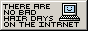
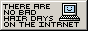

Who am I?
Hi, I'm Fuzzy! I'm a moebuta, which means I love anime and manga that feature cute girls spending time together, forging strong bonds, and percevering through various challenges.
When it comes to Japanese, I'm still a total beginner.
I also love making webpages (like this one!) out of plain HTML and CSS. I've been doing it for over 10 years now!
- If you wanna talk, send me an email: fuzzy+neko@disroot.org
- Or you can message me on discord: fuzzysite


 
